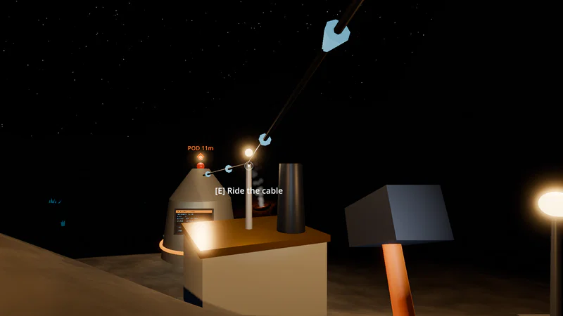
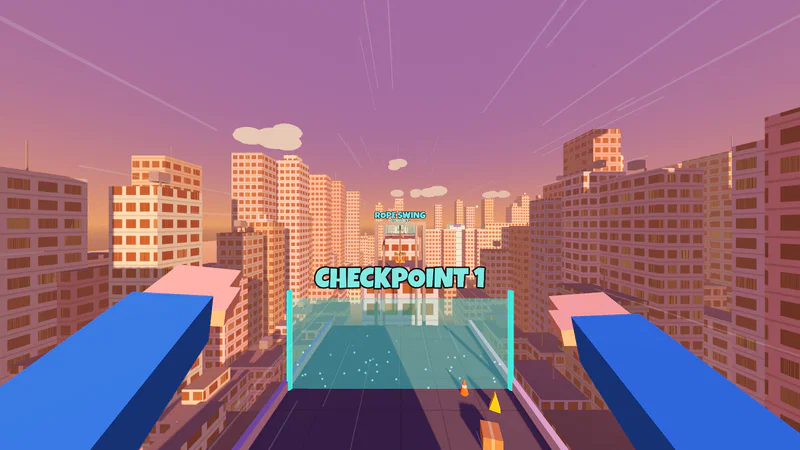
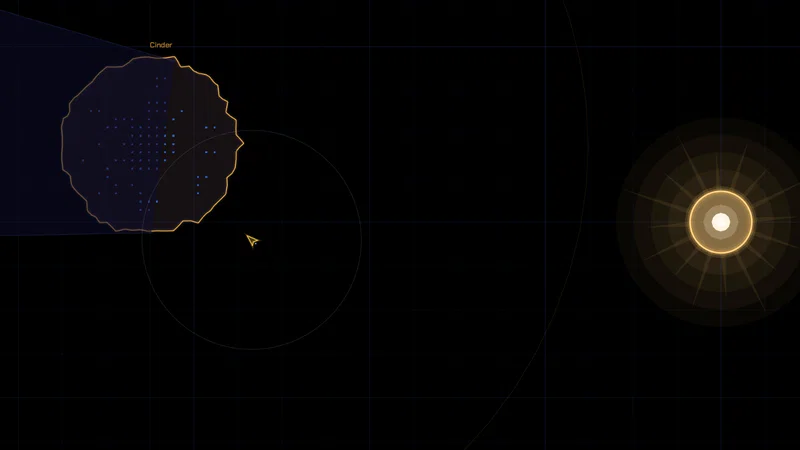
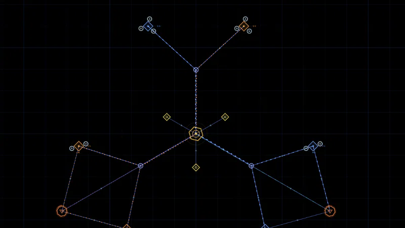

Game Demos
Prototypes in progress, built in Godot and playable right here in the browser.

Rockhopper
Co-op mining on a turning asteroid, where the dark is the enemy. Dig ore, hammer up lamps, panels and drill rigs, and string cables home to the pod before night brings the spiders, while one of you plans the base from the command chair.

Sloprunner
First-person parkour racing across generated rooftops. Wallrun, slide, vault and grapple, chain moves to build speed, draft new abilities between races, and slap whoever's in your way. Online with friends or against bots.

Skiff
One ship, a handful of bots and a star that keeps flaring. Fly by hand, mark rock for your bots to dig, craft parts and modules from what they haul, and duck into a planet's shadow before the next flare hits.

fork() real-time logistics
You're a self-replicating probe. Mine a star system, route ore along lanes into a growing base, and build the replicant that carries your lineage to the next system. Three systems per run, against the clock.